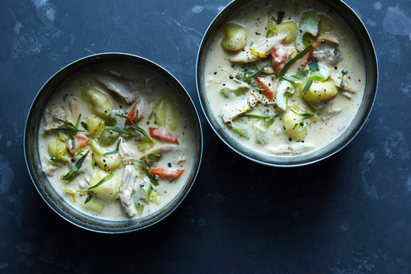

Chicken and Dumpling Soup

Description
This soup! I make it all the time, although more often when it's less warm out. It's a yummy yummy soup that's hearty, has good nutrition, and isn't too bad to whip up
I really recommend using homemade chicken stock for this bad boy. The recipe (as you'll see!) calls for a rotisserie chicken- if you buy it in advance, you can make some stock with the carcass.
Ingredients
- 3 tbsp butter
- a few carrots or a small butternut squash, diced/chopped
- a good sized leek or two diced/chopped
- two celery stalks diced/chopped(skip if desired)
- 3 garlic cloves chopped
- a tbsp each fresh thyme, rosemary
- salt n pep
- 3 tbsp flour
- 5 cups stock
- cup o heavy cream
- 16 oz (one pack) storebought gnocchi
- half a rotisserie chicken
Steps
- melt the butter in a large pot over medium
- add carrots, leek, celery, garlic, rosemary, thyme
- season with S&P and stir until veggies slightly soft - about 5 mins
- sprinkle with flour, then cook, stirring for 2 mins
- stir in the stock and cream and bring to boil over high
- once boiling, stir in gnocchi, reduce to medium, cook until gnocchi and veggies are tender (5 mins)
- stir chicken in towards the end. season to taste with salt n pep
- divide and conquer? divide and enjoy!